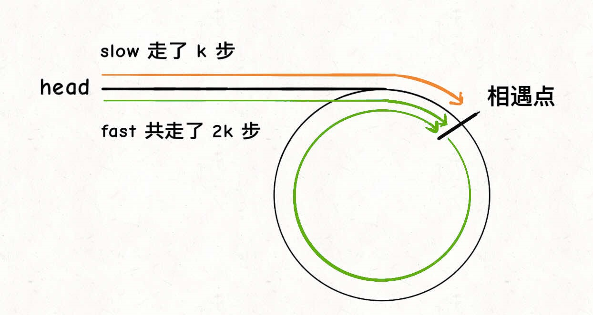
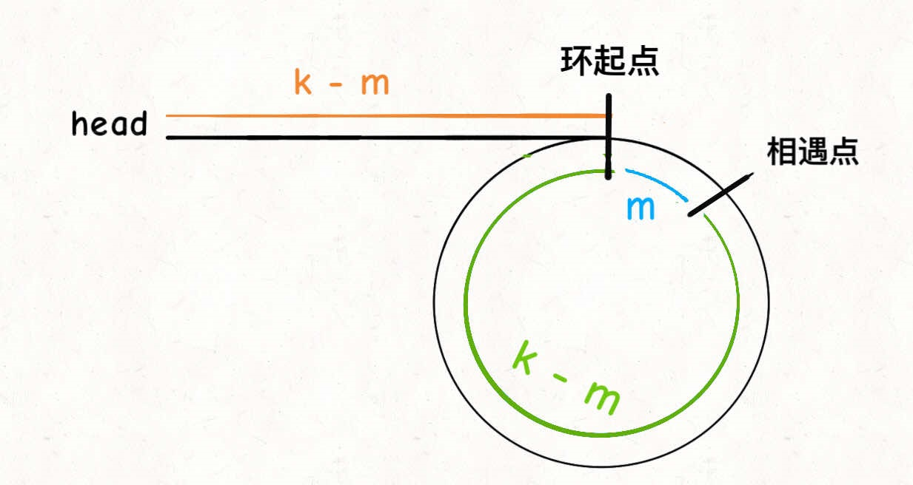
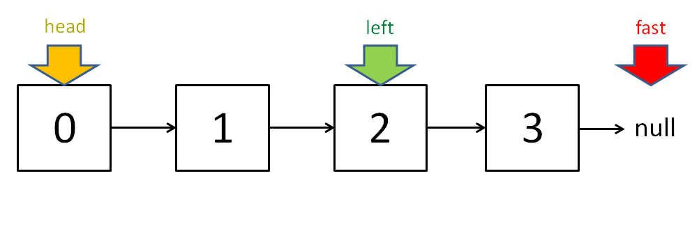

这篇文章是leetcode刷题系列的第2部分——链表，链表的大部分题目难度都不大。leetcode上链表部分的题目也就40道左右，基本上都做了，这里就把有代表性的题目发出来，共计21道。每道题都给出了注释，有的题目还给出了另一种思路和解法。另外，博主是非常注重代码编写风格的，因此代码可读性较好。
接下来这几个月，计划完成的leetcode刷题系列其组织如下：
1. 数组
2. 链表
3. 字符串
4. 二叉树
5. 队列和栈
6. 动态规划
7. 数据结构设计
预计涉及题目至少200道！
Linked List
给定一个单链表的头节点，反转链表，然后返回反转后的链表头节点。
1 2 3 4 5 6 7 8 9 10 11 12 13 14 15 16 17 18 19 20 21 22 23 24 25 26 ListNode* reverseList (ListNode* head) ListNode* p = nullptr ; ListNode* q = p; while (head) { q = head->next; head->next = p; p = head; head = q; } return p; } ListNode* reverseList (ListNode* head) if (!head || !head->next) return head; ListNode* q = reverseList(head->next); head->next->next = head; head->next = nullptr ; return q; }
给定一个单链表的头以及left和right两个整数，其中left <= right，将链表中从left位置到right位置的节点反转，返回反转后的链表。
1 2 3 4 5 6 7 8 9 10 11 12 13 14 15 16 17 18 19 20 21 22 23 24 25 26 27 28 29 30 31 32 33 34 35 36 37 38 39 40 41 42 43 44 45 46 47 48 49 50 51 52 53 54 55 56 57 58 59 60 61 62 63 64 65 66 67 68 69 70 71 72 73 74 75 76 77 78 79 80 81 82 ListNode* reverseList (ListNode* head) if (!head || !head->next) return head; ListNode* q = reverseList(head->next); head->next->next = head; head->next = nullptr ; return q; } ListNode* reverseN (ListNode* head, int n) ListNode* p = head; while (--n > 0 ) p = p->next; ListNode* q = p->next; p->next = nullptr ; ListNode* r = reverseList(head); head->next = q; return r; } ListNode* reverseBetween (ListNode* head, int left, int right) if (left == 1 ) return reverseN(head, right); head->next = reverseBetween(head->next, left - 1 , right - 1 ); return head; } ListNode* reverseList (ListNode* head) ListNode* p = nullptr ; ListNode* q = p; while (head) { q = head->next; head->next = p; p = head; head = q; } return p; } ListNode* reverseN (ListNode* head, int n) ListNode* p = head; while (--n > 0 ) p = p->next; ListNode* q = p->next; p->next = nullptr ; ListNode* r = reverseList(head); head->next = q; return r; } ListNode* reverseBetween (ListNode* head, int left, int right) if (left == 1 ) return reverseN(head, right); int n = right - left + 1 ; ListNode* p = head; left--; while (--left > 0 ) p = p->next; p->next = reverseN(p->next, n); return head; }
给你一个链表，每k个节点一组进行翻转，请你返回翻转后的链表。k是一个正整数，它的值小于或等于链表的长度。如果节点总数不是k的整数倍，那么请将最后剩余的节点保持原有顺序。
进阶：你可以设计一个只使用常数额外空间的算法来解决此问题吗？不能只是单纯的改变节点内部的值，而是需要实际进行节点交换。
Example 1
Example 2
1 2 3 4 5 6 7 8 9 10 11 12 13 14 15 16 17 18 19 20 21 22 23 24 25 26 27 28 29 30 31 32 33 34 35 36 37 38 39 40 41 42 43 44 45 46 47 48 49 50 51 52 53 54 55 56 57 ListNode* reverseList (ListNode* head) ListNode* p = nullptr ; ListNode* q = p; while (head) { q = head->next; head->next = p; p = head; head = q; } return p; } ListNode* reverseN (ListNode* head, int n) ListNode* p = head; while (--n > 0 ) p = p->next; ListNode* q = p->next; p->next = nullptr ; ListNode* r = reverseList(head); head->next = q; return r; } ListNode* reverseKGroup (ListNode* head, int k) ListNode* q = head; int n = k; while (--n && q) q = q->next; if (!q) return head; ListNode* p = head; head = reverseN(head, k); while (1 ) { ListNode* r = p->next; q = r; n = k; while (--n && q) q = q->next; if (!q) break ; p->next = reverseN(p->next, k); p = r; } return head; }
给定一个单链表，从链表随机返回一个节点的值。 每个节点必须具有相同的被选择概率。
如果链表很大并且你不知道其长度怎么办？你能在不使用额外空间的情况下有效解决此问题吗？
如果随机返回k个节点的值呢？
水塘抽样算法 ：遇到第i个元素时，应该有1/i的概率选择该元素，1 - 1/i的概率保持原有的选择。
证明 ：假设总共有n个元素，我们要的随机性无非就是每个元素被选择的概率都是1/n ，那么对于第i个元素，它被选择的概率就是：
同理，如果要随机选择k个数，只要在第i个元素处以k/i的概率选择该元素，以1 - k/i的概率保持原有选择即可。
证明 ：略。
1 2 3 4 5 6 7 8 9 10 11 12 13 14 15 16 17 18 19 20 21 22 23 24 25 26 27 28 29 30 31 32 33 34 int getRandom (ListNode* head) int res = 0 , i = 0 ; while (head) { int j = rand() % ++i; if (j == 0 ) res = head->val; head = head->next; } return res; } vector <int > getRandom (ListNode* head, int k) vector <int > res (k, 0 ) for (int i = 0 ; i < k && head; i++, head = head->next) res[i] = p->val; int i = k; while (head) { int j = rand() % ++i; if (j < k) res[j] = head->val; head = head->next; } return res; }
给定两个表示两个非负整数的非空链表。 这些数字以相反的顺序存储，即低位数在前，并且它们的每个节点都包含一个数字。 将两个数字相加并返回总和作为链接列表。
1 2 3 4 5 6 7 8 9 10 11 12 13 14 15 16 17 18 19 20 21 22 23 24 25 26 27 28 29 30 31 32 33 34 35 36 37 38 39 40 ListNode* addTwoNumbers (ListNode* p, ListNode* q) ListNode* head = new ListNode; ListNode* last = head; int sum = 0 ; int carry = 0 ; while (p && q) { sum = p->val + q->val + carry; carry = sum / 10 ; last->next = new ListNode(sum % 10 ); last = last->next; p = p->next; q = q->next; } while (p) { sum = p->val + carry; carry = sum / 10 ; last->next = new ListNode(sum % 10 ); last = last->next; p = p->next; } while (q) { sum = q->val + carry; carry = sum / 10 ; last->next = new ListNode(sum % 10 ); last = last->next; q = q->next; } if (carry > 0 ) last->next = new ListNode(carry); return head->next; }
给定两个表示两个非负整数的非空链表。 高位数字在前，并且它们的每个节点都包含一个数字。 将两个数字相加，然后将其作为链表返回。
如果无法修改输入列表怎么办？ 换句话说，不允许反转列表。
Input: (7 -> 2 -> 4 -> 3) + (5 -> 6 -> 4)Output: 7 -> 8 -> 0 -> 7
1 2 3 4 5 6 7 8 9 10 11 12 13 14 15 16 17 18 19 20 21 22 23 24 25 26 27 28 29 30 31 32 33 34 35 36 37 38 39 40 41 42 43 44 45 46 47 48 49 ListNode* addTwoNumbers (ListNode* p, ListNode* q) stack <ListNode*> pStack, qStack; while (p) { pStack.push(p); p = p->next; } while (q) { qStack.push(q); q = q->next; } ListNode* head = nullptr ; int sum = 0 ; int carry = 0 ; while (!pStack.empty() || !qStack.empty()) { if (!pStack.empty() && !qStack.empty()) { sum = pStack.top()->val + qStack.top()->val + carry; pStack.pop(); qStack.pop(); } else if (!pStack.empty()) { sum = pStack.top()->val + carry; pStack.pop(); } else { sum = qStack.top()->val + carry; qStack.pop(); } carry = sum / 10 ; head = new ListNode(sum % 10 , head); } if (carry > 0 ) head = new ListNode(carry, head); return head; }
给定一个链表的头以及一个整数k。将从头开始第k个节点的值与从结尾开始第k个节点的值交换，返回链表的头。
Input: head = [1, 2, 3, 4, 5], k = 2Output: [1, 4, 3, 2, 5]
1 2 3 4 5 6 7 8 9 10 11 12 13 14 15 16 17 18 19 20 21 ListNode* swapNodes (ListNode* head, int k) ListNode* left = nullptr ; ListNode* p = head; while (--k) p = p->next; left = p; ListNode* right = head; while (p->next) { right = right->next; p = p->next; } swap(left->val, right->val); return head; }
给定一个单链表的头，其中元素按升序排序，请将其转换为高度平衡的BST。结果不唯一。
在此处，高度平衡的二叉树定义为这样一棵二叉树，其中每个节点的两个子树的深度相差不超过1。
1 2 3 4 5 6 7 8 9 10 11 12 13 14 15 16 17 18 19 20 21 22 23 24 25 26 27 28 29 30 TreeNode* sortedListToBST (ListNode* head) if (!head) return nullptr ; if (!head->next) return new TreeNode(head->val); ListNode* slow = head; ListNode* fast = head; ListNode* preSlow = head; while (fast && fast->next) { preSlow = slow; slow = slow->next; fast = fast->next->next; } preSlow->next = nullptr ; TreeNode* root = new TreeNode(slow->val); root->left = sortedListToBST(head); root->right = sortedListToBST(slow->next); return root; }
给定链表的头节点，确定链表中是否有环。如果链表中有一个循环，则返回true。 否则，返回false。
1 2 3 4 5 6 7 8 9 10 11 12 13 14 15 16 17 18 bool hasCycle (ListNode* head) ListNode* slow = head; ListNode* fast = head; while (fast && fast->next) { slow = slow->next; fast = fast->next->next; if (slow == fast) return true ; } return false ; }
给定一个链表头节点，返回环开始的节点。 如果没有环，则返回null。
第一次相遇时，假设慢指针slow走了k步，那么快指针fast一定走了2k步：

fast一定比slow多走了k步，这多走的k步其实就是fast指针在环里转圈圈，所以k的值就是环长度的「整数倍」。设相遇点距环的起点的距离为m，那么环的起点距头结点head的距离为k - m，也就是说如果从head前进k - m步就能到达环起点。
巧的是，如果从相遇点继续前进k - m步，也恰好到达环起点。你甭管fast在环里到底转了几圈，反正走k步可以到相遇点，那走k - m步一定就是走到环起点了：

1 2 3 4 5 6 7 8 9 10 11 12 13 14 15 16 17 18 19 20 21 22 23 ListNode* detectCycle (ListNode* head) ListNode* slow = head; ListNode* fast = head; while (fast && fast->next) { slow = slow->next; fast = fast->next->next; if (slow == fast) break ; } if (!fast || !fast->next) return nullptr ; slow = head; while (slow != fast) { slow = slow->next; fast = fast->next; } return slow; }
给定一个链表头节点，返回链表的中间节点。
可以让快指针一次前进两步，慢指针一次前进一步，当快指针到达链表尽头时，慢指针就处于链表的中间位置。当链表的长度是奇数时，slow恰巧停在中点位置；如果长度是偶数，slow最终的位置是中间偏右。

链表的归并排序 ：对于链表，合并两个有序链表是很简单的，难点就在于二分。但是现在知道了找到链表的中点的方法，就能实现链表的二分了。
1 2 3 4 5 6 7 8 9 10 11 12 ListNode* middleNode (ListNode* head) ListNode* slow = head; ListNode* fast = head; while (fast && fast->next) { fast = fast->next->next; slow = slow->next; } return slow; }
给定一个链表，删除链表的倒数第n个节点，并且返回链表的头结点。
Example:
1 2 >Input: head = [1,2,3,4,5], n = 2 >Output: [1,2,3,5]
1 2 3 4 5 6 7 8 9 10 11 12 13 14 15 16 17 ListNode* removeNthFromEnd (ListNode* head, int n) ListNode* slow = head; ListNode* fast = head; while (n-- > 0 ) fast = fast->next; if (!fast) return head->next; while (fast->next) { slow = slow->next; fast = fast->next; } slow->next = slow->next->next; return head; }
给定两个单链列表headA和headB的头，返回两个列表相交的节点。 如果两个链接列表完全没有交集，则返回null。
例如，以下两个链接列表开始在节点c1处相交：
1 2 3 4 5 6 7 8 9 10 11 12 13 14 15 16 17 18 19 20 21 22 23 24 25 26 27 28 29 30 31 32 33 34 35 36 ListNode* getIntersectionNode (ListNode* headA, ListNode* headB) if (!headA || !headB) return nullptr ; ListNode* p = headA; while (p->next) p = p->next; p->next = headA; ListNode* slow = headB; ListNode* fast = headB; while (fast && fast->next) { slow = slow->next; fast = fast->next->next; if (slow == fast) break ; } if (!fast || !fast->next) { p->next = nullptr ; return nullptr ; } slow = headB; while (slow != fast) { slow = slow->next; fast = fast->next; } p->next = nullptr ; return slow; }
给定一个单链列表的头，将所有具有奇数索引的节点组合在一起，然后再加上具有偶数索引的节点，然后返回重新排序的列表。
第一个节点被认为是奇数，第二个节点被认为是偶数，依此类推。请注意，偶数和奇数组中的相对顺序应保持输入中的原样。
Could you solve it in O(1) space complexity and O(nodes) time complexity?
1 2 3 4 5 6 7 8 9 10 11 12 13 14 15 16 17 18 19 20 21 22 ListNode* oddEvenList (ListNode* head) if (!head || !head->next || !head->next->next) return head; ListNode* p = head; ListNode* q = head->next; ListNode* r = q; while (q && q->next) { p->next = q->next; q->next = p->next->next; p = p->next; q = q->next; } p->next = r; return head; }
给定一个单链表的头节点，如果它是回文链表，则返回true。例如，下面这个就为回文链表：
1 2 3 4 5 6 7 8 9 10 11 12 13 14 15 16 17 18 19 20 21 22 23 24 25 26 27 28 29 30 31 32 33 34 35 36 37 38 39 40 41 42 43 44 45 46 47 48 49 50 51 52 53 54 55 56 57 58 59 60 61 62 63 64 65 66 67 ListNode* left = nullptr ; bool isPalindrome (ListNode* head) left = head; return traverse(head); } bool traverse (ListNode* right) if (!right) return true ; bool res = traverse(right->next); res = res && (left->val == right->val); left = left->next; return res; } ListNode* reverseList (ListNode* head) if (!head || !head->next) return head; ListNode* q = reverseList(head->next); head->next->next = head; head->next = nullptr ; return q; } bool isPalindrome (ListNode* head) ListNode* slow = head; ListNode* fast = head; ListNode* preSlow = nullptr ; while (fast && fast->next) { preSlow = slow; slow = slow->next; fast = fast->next->next; } if (fast) { preSlow = slow; slow = slow->next; } ListNode* slow = reverseList(slow); ListNode* last = slow; while (last) { if (last->val != head->val) { preSlow->next = reverseList(slow); return false ; } last = last->next; head = head->next; } preSlow->next = reverseList(slow); return true ; }
合并两个有序的链表，并将合并结果作为有序链表返回。
1 2 3 4 5 6 7 8 9 10 11 12 13 14 15 16 17 18 19 20 21 22 23 24 25 26 27 28 29 30 31 32 33 34 35 36 37 38 39 40 41 42 43 44 45 ListNode* mergeTwoLists (ListNode* p, ListNode* q) ListNode* head = new ListNode; ListNode* last = head; while (p && q) { if (p->val <= q->val) { last->next = p; p = p->next; } else { last->next = q; q = q->next; } last = last->next; } if (p) last->next = p; if (q) last->next = q; return head->next; } ListNode* mergeTwoLists (ListNode* p, ListNode* q) if (!p) return q; if (!q) return p; ListNode* head = nullptr ; if (p->val <= q->val) { head = p; head->next = mergeTwoLists(p->next, q); return head; } head = q; head->next = mergeTwoLists(p, q->next); return head; }
给定一个由k个链表头节点所组成的数组，每个链表以升序排列。将所有链表合并为一个排序的链表，然后将其返回。
Example 1:
1 2 3 4 5 6 7 8 9 10 Input: lists = [[1,4,5],[1,3,4],[2,6]] Output: [1,1,2,3,4,4,5,6] Explanation: The linked-lists are: [ 1->4->5, 1->3->4, 2->6 ] merging them into one sorted list: 1->1->2->3->4->4->5->6
1 2 3 4 5 6 7 8 9 10 11 12 13 14 15 16 17 18 19 20 21 22 23 24 25 26 27 ListNode* mergeKLists (vector <ListNode*>& lists) auto cmp = [](ListNode* a, ListNode* b) { return a->val > b->val; }; priority_queue<ListNode*, vector<ListNode*>, decltype(cmp)> pq(cmp); for (int i = 0 ; i < lists.size(); i++) if (lists[i]) pq.push(lists[i]); ListNode* head = new ListNode; ListNode* p = head; while (!pq.empty()) { p->next = pq.top(); pq.pop(); p = p->next; if (p->next) pq.push(p->next); } return head->next; }
给定一个双向链表，该链表除了拥有指向下一个节点和上一个节点的指针外，还具有一个孩子指针，该孩子指针可能指向也可能不指向单独的双向链接列表。 这些子链表可能有一个或多个自己的子链表，依此类推，以产生一个多级数据结构，如下面的示例所示：
展平链表，以便所有节点都出现在单级双链表中。 返回链表的头。
1 2 3 4 5 6 7 8 9 10 11 12 13 14 15 16 17 18 19 20 21 22 23 24 25 26 27 28 29 30 31 32 33 34 35 36 37 38 39 40 41 42 43 44 45 46 47 48 49 50 51 52 53 54 55 56 Node* flatten (Node* p) if (!p) return p; Node* head = new Node; head->prev = nullptr ; head->next = nullptr ; head->child = nullptr ; Node* q = head; stack <Node*> nodes; while (p) { q->next = p; p->prev = q; q = q->next; if (p->child) { Node* temp = p; if (p->next) nodes.push(p->next); p = p->child; temp->child = nullptr ; } else p = p->next; if (!p) { if (nodes.empty()) break ; p = nodes.top(); nodes.pop(); } } head->next->prev = nullptr ; return head->next; }
给定一个单链表的头节点，将链表向右旋转k个位置。
Example 1:
1 2 Input: head = [1,2,3,4,5], k = 2 Output: [4,5,1,2,3]
Example 2:
1 2 Input: head = [0,1,2], k = 4 Output: [2,0,1]
Example 1
Example 2
1 2 3 4 5 6 7 8 9 10 11 12 13 14 15 16 17 18 19 20 21 22 23 24 25 26 27 28 29 30 31 32 33 ListNode* rotateRight (ListNode* head, int k) if (!head || k == 0 ) return head; ListNode* p = head; int count = 1 ; while (p->next) { p = p->next; count++; } k = k % count; if (k == 0 ) return head; k = count - k; ListNode* q = head; while (--k) q = q->next; ListNode* start = q->next; q->next = nullptr ; p->next = head; return start; }
给你一个长度为n的链表，每个节点包含一个额外增加的随机指针random，该指针可以指向链表中的任何节点或空节点。
构造这个链表的深拷贝。 深拷贝应该正好由n个全新节点组成，其中每个新节点的值都设为其对应的原节点的值。新节点的next指针和random指针也都应指向复制链表中的新节点，并使原链表和复制链表中的这些指针能够表示相同的链表状态。复制链表中的指针都不应指向原链表中的节点 。
例如，如果原链表中有X和Y两个节点，其中X.random --> Y。那么在复制链表中对应的两个节点x和y，同样有x.random --> y。
返回复制链表的头节点。
用一个由n个节点组成的链表来表示输入/输出中的链表。每个节点用一个[val, random_index]表示：
val：一个表示Node.val的整数。random_index：随机指针指向的节点索引（范围从0到n - 1）；如果不指向任何节点，则为null。head作为传入参数。
Example 1:
1 2 Input: head = [[3,null],[3,0],[3,null]] Output: [[3,null],[3,0],[3,null]]
Example 2:
1 2 Input: head = [[7,null],[13,0],[11,4],[10,2],[1,0]] Output: [[7,null],[13,0],[11,4],[10,2],[1,0]]
1 2 3 4 5 6 7 8 9 10 11 12 13 14 15 16 17 18 19 20 21 22 23 24 25 26 27 28 29 30 31 32 33 34 35 36 37 38 39 40 41 42 43 44 45 46 47 48 49 50 51 52 53 54 55 56 57 58 59 60 61 62 63 64 65 66 67 68 69 70 Node* copyRandomList (Node* head) unordered_map <Node*, Node*> mapping; Node* helper = new Node(0 ); Node* last = helper; while (head) { if (mapping.count(head)) last->next = mapping[head]; else { last->next = new Node(head->val); mapping[head] = last->next; } if (head->random) { if (mapping.count(head->random)) last->next->random = mapping[head->random]; else { last->next->random = new Node(head->random->val); mapping[head->random] = last->next->random; } } head = head->next; last = last->next; } return helper->next; }
给出一个以头节点head作为第一个节点的链表。链表中的节点分别编号为：node_1, node_2, node_3, ... 。
每个节点都可能有下一个更大值（next larger value）：对于node_i，如果其next_larger(node_i)是node_j.val，那么就有j > i且node_j.val > node_i.val，而j是可能的选项中最小的那个。如果不存在这样的j，那么下一个更大值为0。
Example 1:
1 2 Input: [2,1,5] Output: [5,5,0]
Example 2:
1 2 Input: [2,7,4,3,5] Output: [7,0,5,5,0]
1 2 3 4 5 6 7 8 9 10 11 12 13 14 15 16 17 18 19 20 21 22 23 24 25 26 27 28 29 30 31 32 33 vector <int > nextLargerNodes (ListNode* head) vector <int > res; stack <int > s; helper(head, s, res); reverse(res.begin(), res.end()); return res; } void helper (ListNode* head, stack <int >& s, vector <int >& res) if (!head) return ; helper(head->next, s, res); while (!s.empty() && s.top() <= head->val) s.pop(); res.push_back(s.empty() ? 0 : s.top()); s.push(head->val); }